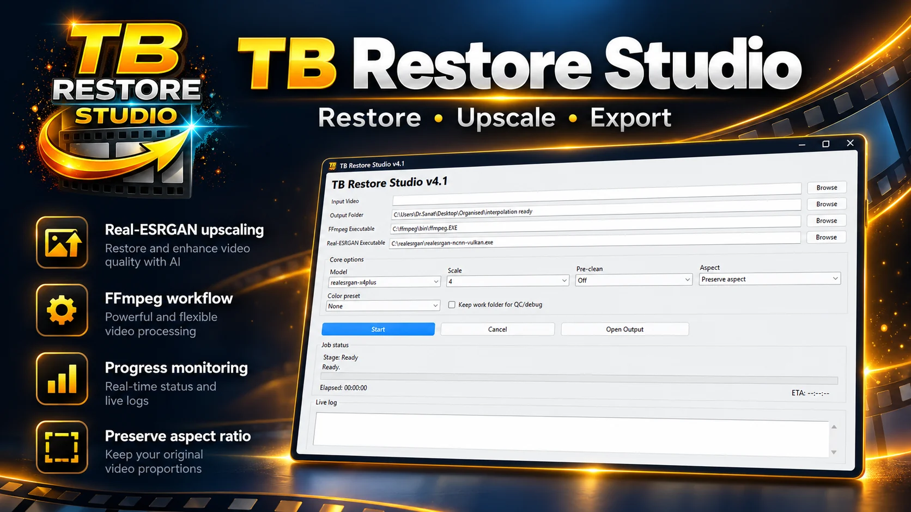
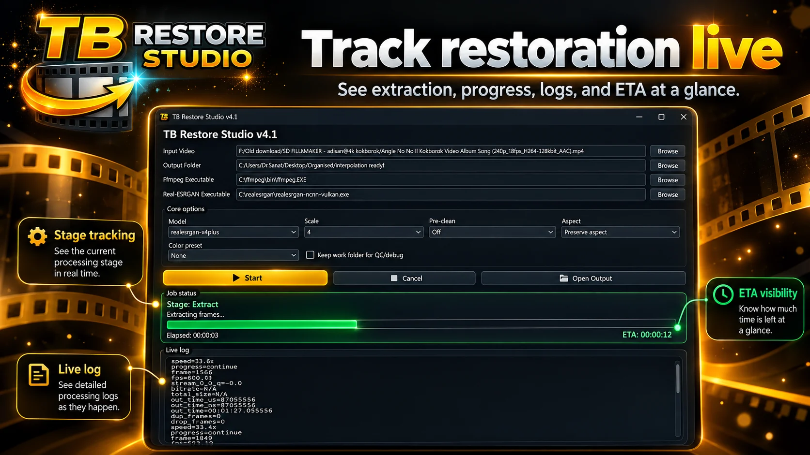

Use supported Real-ESRGAN models and scale options for frame-by-frame enhancement.
← All products

Windows · Available on Request
TB Restore Studio
A specialist Windows restoration workflow for archival video upscaling, processing and media preparation.

What it does
Restoration without the command-line maze.
A practical front end for repeatable upscaling and restoration jobs using proven external tools.
Extract, process and remux video through an FFmpeg-based restoration pipeline.
Preserve the original source proportions while preparing restored output.
Choose restoration options, model, scale and color treatment before processing.
Track processing stage, elapsed time, ETA and detailed logs while a job runs.
TB Restore Studio is licensed directly by Sanat Utility Studio rather than distributed through a public app store.
Inside the product
Watch restoration progress as it happens.
The interface keeps the processing stage, log and ETA visible during long restoration jobs.

Availability
Licensed access is available on request.
TB Restore Studio is a Sanat Utility Studio Windows product distributed directly rather than through a public app store. Contact the studio for availability and pricing.